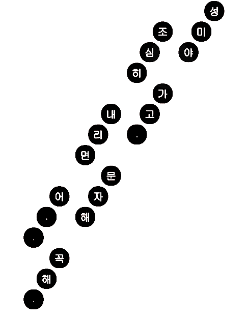
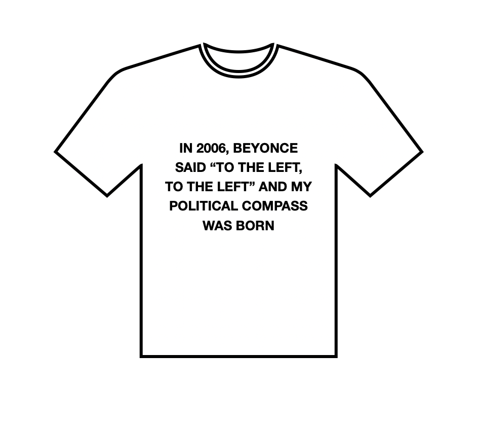

개미 쪽으로,
더 개미 쪽으로
김선오
(시인)
동물에게는 글자가 없다. 당연한 말이지만, 그러므로 동물에게는 문학이 없다. 동물은 인간을 쓸 수 없다. 그러나 인간은 동물을 쓴다. 모든 국면에서의 인간-동물 관계가 그러하듯 문학에서 역시 철저히 일방향적이다. 한국 현대시에 빠짐없이 등장해 온 비인간동물들을 떠올려본다. 개, 고양이, 새, 돼지처럼 비교적 친근한 동물들부터 이름만으로 기표 층위의 신비로움을 자아내는 복잡하고 이국적인 학명의 동물들까지, 시인들은 동물이 침묵하고 있다는 사실과 무관하게 혹은 그 사실에 온전히 기대어 동물을 가져다 썼다. ‘동물-프롤레타리아’ 개념은 문학의 테두리 안에서 한층 더 공고히 정의될 수 있을 것이다. 언어라는 자본의 무산계급으로서 동물은 오랜 시간 인간의 수사를 위해 동원되어 왔다.
─「개미 키스」 부분
시집을 여는 첫 번째 시 「개미 키스」는 시인의 이름 (계미현)이라 짐작되는 “미현아”라는 호명과 함께 시작된다. ‘계미현’ 이름의 앞 두 글자가 ‘개미’와 동음임을 알아채기는 어렵지 않다. 페이지를 넘기면 두 번째 시이자 표제작인 「현泫 가의 몰락」이 등장한다. 이 제목을 통해 남은 글자인 ‘현’이 ‘계미’라는 이름을 가진 시인의 성일 것이라 추측할 수 있다. 위 두 시에서 ‘미현’ 혹은 ‘현’씨 성을 가진 개체들은 한국어를 구사하며 키스를 하기
도 하고 천장으로 날아올라 섹스를 하거나 자살을 하거나 휴지에 뭉개져 사망하거나 해충 박멸 업체의 대학살로 희생되는 등 인간-개미 중 어느 종種이라 확언할 수 없도록 의도적으로 불분명하게 그려져 있다. 이러한 불분
명성은 인간-개미가 취약성을 공유한다는 점에서 동질적인 존재임을 드러내는데, 이후 다른 시들에서 인간 종의 취약성은 지정 여성에게 부여되는 한국어 이름의 호명으로, 사회에 의해 죽임을 당하는 노동자 계급의 여성과 인
간에 의해 박멸되는 개미의 취약성이 공유되는 방식으로 목격된다.(「경희」, 「민주의 오전」, 「은경의 유전자」, 「승은의 인사」) 그러므로 이 시집에서 개미는 시인인 동시에 화자이며 시적 대상이다. 주체와 객체 사이의 경계
가 이미 지워져 있는 세계에서 시집은 출발한다. 이 몰락한 폐허에서 솟아난 말들은 인간과 개미의 입을 건너다니다 마침내 얽히고 범람하며 두 종을 연결한다. 읽다 보면 시를 이루는 검은 글자들도 모두 개미 아닌가? 하는
생각이 들 정도로 시집 전반에 걸쳐 개미라는 화자이자 대상은 지속적으로, 끈질기게 시라는 형식의 외부로 낙오되지 않겠다는 의지를 드러내며 찾아오기에 이러한 연결이 이 시들의 절박한 목적임을 실감할수 있다.

─「출근길」 부분
「개미 키스」에서 눈에 띄는 또 다른 측면은 반복적으로 언급되는 ‘죽은 자국’이라는 말이자 시각적 형태이다. 이는 여섯 개의 발자국 같은 검은 원들의 연속으로 이루어진 시 「출근길」과 공명하는데, 이 원들이 개미들의 ‘죽은 자국’처럼 보이기 때문이다. 출근길에 파리채 조심하라는 걱정을 들으며 지하철을 타는 성미와 성미의 죽음을 염려하는 언니 사이의 대화 내용은 개미들의 ‘죽은 자국’처럼 보이는 검은 원 위에 흰 글자로 적혀 있다. 이때 ‘죽음 위에 적힌 대화’란 시의 형식이자 내용이 된다. 지하철을 타고 출근하는 동안 파리채를 조심해야 하는 성미는 개미도 인간도 아닌 개미-인간 합성체로서 시속에서 동물-인간 사이의 위계를 지우며 생성된다. 이처럼 이름과 얼굴을 가진 이에게 주어질 죽음이라는 예정 된 비극의 가해자가 다름 아닌 바로 자신일 수 있다는 자각은 시를 읽던 인간 독자를 당황케 한다. “문자 해, 꼭 해”라는 언니의 마지막 당부가 주는 울림은 그러므로 인간과 개미의 죽음이 구별될 수 없다는 인식적 전환으로 인해 증폭된다.
알지만 부르지 않음.
─「민주의 오전」 부분
무언가를 시도하는 일만큼 무언가를 하지 않으려는 태도가 시의 고유함을 결정할 수 있다면, 인간의 이름을 부르지 않고 개미의 이름만 부르겠다는 시적 화자의 선언은 주목할 만하다. 역설적이게도 화자는 자신의 이름을 보편적인 한국인 지정 여성의 이름인 ‘민주’라고 소개하는데, 이때 인간은 자신의 이름을 잃고 개미는 이름을 획득하는 방식의 전환이 발생한다.

─「은경의 유전자」 부분
한편 「은경의 유전자」를 살펴보자. 계보 내에서 현은경, 현지영, 현미영, 현다예가 자신의 이름으로 기록되어 있는 반면 아빠1과 아빠2, 아들은 이름 없이 ‘아빠’ 혹은 ‘아들’이라고 적힌다. 이는 이 시집에서 ‘현’이라는 성
이 계승되는 장소가 모계사회임을 암시하며 이곳에서 가부장제는 전복되어 있다. 비인간동물에 대한 타자화는 근본적으로 가부장제와 긴밀하게 결탁하며, 동물-인간, 여성-남성 사이의 위계가 이름의 획득 여부에 따라 역전 가능하다는 인식은 인간-개미 합성체의 발화를 통해 시의 내부에서 형상화된다. 위 시들에서 개미를 인간의 이름으로 부르는 이유는 명백하다. 동물을 쓰는 행위와 동물을 객체로 삼는 행위 사이에 균열을 내기 위해서는 지속적인 호명을 통해 인간과 동물이 서로의 존재 위로 엎치락뒤치락 하며 가변적인 움직임을 만들어내야 하기 때문이다. 동물이 시를 위한 수사적 도구가 아니라 쓰기의
목적이 될 때, 비로소 동물-인간의 관계가 재구축될 수있는 가능성의 공간이 도래한다.
구달의 첫 발표가 있었던 시절과 달리 비인간동물을 사람의 이름으로 부르는 것은 이제 흔한 일이 되었다. 동물원에서 기르는 판다의 이름을 전 국민이 알고 있을 지경이다. 보르헤스는 동물을 세 집단, 즉 우리가 텔레비전을 같이 보는 동물, 우리가 먹는 동물, 그리고 우리가 무서워하는 동물로 분류한 바 있다. 이처럼 동물 종에 따른 종차별주의는 인간이 비인간동물보다 우월하다는 근대적 휴머니즘의 산물이다. 계미현의 시에서 개미들은 구달의 침팬지들처럼 사람의 이름으로 불린다. 제인 구달을 이해하지 못했던 다른 교수들이 그랬듯, 한 명의 개미를 인간의 이름으로 호명하는 계미현의 이와 같은 시도에 대한 공격과 비웃음이 뒤따를 것은 자명하다. 인간 사회에서 개미는 개보다 더 극단적으로 타자화되어 왔으며, 타자에 대한 공감과 존중의 행위는 주류 사회에 의해 늘상 공격의 대상이 되어 왔기 때문이다. 근대적 휴머니즘에서 보편적 ‘인간’은 암묵적으로 도시화된 백인 남성이며 표준어를 사용하고, 재생산 단위로서 이성애적이며, 승인된 정치조직의 완전한 시민으로 가정되어 있다. 이와 같은 특징이 정상성과 규범성의 기준이 될 때 ‘인간성(humanity)’이란 모더니티의 구조적 타자들을 성차화, 인종화, 자연화하며 인간 이하의 지위로 격하시키는 역할을 한다. 우리는 구조적 타자들 간에도 인간과의 거리에 따라 권력적 차등이 발생한다는 사실을 간과하고는 한다. 개를 죽이는 사람과 개미를 죽이 는 사람이 느끼는 죄책감의 강도가 다르다는 인식을 상기해 볼 때 개미의 죽음은 개의 죽음보다 인간으로부터 더 멀리 떨어져 있는 것으로 여겨진다. 계미현의 시는 개미들의 이름을 호명함으로써 그들을 인간과 더 가까운 곳으로 끌어당긴다. 이러한 인력은 계미현의 시들이 지닌 강력한 힘이다. 시에서 들리는 목소리들은 독자로 하여금 이 힘의 방향에 함께 몸을 실어주기를 요구한다. 그러므로 『현 가의 몰락』이라는 시집의 제목은 ‘현 가’로 대표되는 인간성의 몰락을 의미하며 동시에 인간이 양심의 가책 없이 살해해 왔던 개미라는 비인간 동물의 비극을 암시한다.

─「마고의 티셔츠」 부분
계미현과 나는 언젠가 이런 대화를 나누었던 적이 있다. “시를 쓰는 사람이어서 비건이 된 걸지도 몰라요.” “비건이어서 쓰게 되는 시도 있잖아요.” 조르주 아감벤은 인간이 “자기를 인간으로 인식함으로써만 인간이 되는 동물”이기에, 태어난 그대로의 살아 있는 자기 존재를 비인간(동물)으로 두고 그것 이상으로 스스로를 승격시키는 작업이 필요하다고 말한다.2) 세계 도처에 산재해 있는 인간의 죽음은 누구에게나 참담하고 절망적이다. 우리가 인간의 죽음을 대하듯 비인간동물의 비극에 감응할수 있다면 이는 인간에 대한 우선순위를 빼앗는(-) 것이 아니라 연결의 대상을 확장하는(+) 일이 될 것이다. 계미현의 시를 읽으며 우리는 눈앞에 떠오르는 개미의 얼굴을, 우리 귀에 들리는 개미의 이름을 기억할 수 있게 될것이며, 이들이 우리의 시가 부지불식간에 외면해 왔던 대상임을 인지할 수 있을 것이다. 개미가 ‘개미’라는 타자집단이 아니라 이름과 얼굴을 가진 개체의 모습으로 드러날 때, 이 이름과 얼굴들의 우글거림은 타자에 대한 감각의 개편으로 이어진다. 비욘세가 “TO THE LEFT, TO
THE LEFT(왼쪽으로, 왼쪽으로)”라고 말했기 때문에 나의 정치적 입장이 정해졌다는 「마고의 티셔츠」에 적힌 문구처럼, 계미현의 시들이 개미를 지속적으로 호명했기 때문에 개미에 대한 나의 입장은 새롭게 정해졌다. 계미
현의 작업이 인간과 비인간동물 간의 연결에 관한 우리의 입장을 어떻게 재편성해나갈지, 나는 이 시들의 역사적인 퍼포먼스를 앞으로도 1열에서 관람할 예정이다.
1) 계미현, 「일러두기」, 『자음과모음 2022년 겨울호』,
2022. pp13-17.
2) Giorgio Agamben, 『The Open: Man and Animal』, trans.
Kevin Attell, Stanford University Press, 2004,
TO THE ANTS,
TO THE ANTS
Kim Sono
(Poet)
Animals have no letters. Therefore, it goes without saying that animals have no literature. Animals cannot write humans. But humans write animals. As in all aspects of human-animal relationships, the human-animal relationship in literature is entirely one-sided. I harken back to the non-human animals that have consistently appeared in modern Korean poetry. From relatively familiar animals such as dogs, cats, birds, and pigs to animals with complex and exotic scientific names that evoke mystery at the signifier level, poets have used animals regardless of the fact that they are silent or by relying entirely on that very fact. The concept of animal-proletariat can be defined more concretely within the confines of literature. As the proletariat of the capital called language, animals have been mobilized for human rhetoric for a long time.
Excerpt from “Ant Kiss”
The first poem, “Ant Kiss,” begins with the call “Mihyun,” which is assumed to be the poet’s name. It is not difficult to recognize that the first two letters of the name Gye Mihyun are homonymous with “ant” in Korean (gaemi). If you turn the page, the second and title poem, The Fall of the Hyuns, appears. From this title, we can assume that the remaining letter “Hyun” is the surname of a poet named “Gye-mi.” In these first two poems, the entities with the surname “Mihyun” or “Hyun” speak Korean, kiss, fly to the ceiling, have sex, commit suicide, die from being crushed by toilet paper, or fall victim to a pest extermination company massacre. It is intentionally vague, making it impossible to determine which species it is from the human-ant. This indistinctness reveals that these human-ants are homogeneous beings in that they share vulnerability. In the later poems, the vulnerability of the human species is conveyed in the Korean names given to certain women and through a shared vulnerability between working-class women who are killed by society and ants who are eradicated by humans. (“kyunghee,” “Minju’s Morning,” Eunkyung’s Gene,” Seungeun’s Hello”) Therefore, in this poetry collection, the ant is the poet, the speaker, and the poetic object altogether. The collection begins in a world where the boundary between subject and object has already been erased. The words that arise from these fallen ruins cross the mouths of humans and ants, eventually intertwining and overflowing, connecting the two species. As you read, you think to yourself, “Aren't all these black letters that make up the poem ants as well?” Throughout the poetry collection, ants, as both the speaker and the subject, continually and persistently reveal their determination not to fall outside the form of poetry, making the reader realize that this connection is a critical and desperate objective of these poems.

Excerpt from “Way to Work”
Another aspect that stands out in “Ant Kiss” is the repeatedly mentioned word and visual form of the dead mark (“mark of someone who died”). The dead mark resonates with the poem “Way to Work,” which is composed of a series of black circles resembling six footprints because these circles look like the dead mark of ants. The conversation between Seongmi, who rides the subway while being warned of the flyswatter on her way to work, and her sister, worried about Seongmi's death, is written in white letters over black circles resembling the dead mark of ants. In that moment, this dialogue written over death becomes both the poem’s form and content. Seongmi, who has to be careful of the flyswatter while riding the subway to work, is neither an ant nor a human, but an ant-human composite, created in the poem by erasing the hierarchy between animals and humans. The subsequent realization that the perpetrator of the tragedy, destined for a person with a name and a face, could be none other than oneself, bewilders the human reader of the poem. The resonance of the sister's final request, “Text me, don’t forget,” is therefore amplified by the cognitive shift that identifies the deaths of humans with the death of ants.
Excerpt from “Minju’s Morning”
If poetry’s distinct identity can be determined by the attitude of not wanting to do something as much as the attempt to do something, the poetic speaker's declaration that they will not call the names of humans but only the names of ants is worth noting. Paradoxically, the speaker introduces their name as “Minju,” a common Korean female name. At this time, a change occurs by way of humans losing their names and ants acquiring their names.

Excerpt from “Eunkyung’s Genes”
Now, let’s take a look at “Eunkyung’s Gene.” In the genealogy, Hyun Eunkyung, Hyun Jiyoung, Hyun Miyoung, and Hyun Daye are all recorded with their names, while Father 1, Father 2, and Son are written as “Father” or “Son” without names. This suggests that the place where the surname “Hyun” is inherited is a matriarchal society. Here, patriarchy is overturned. The othering of non-human animals is fundamentally in collusion with patriarchy, and the recognition that the hierarchy between animals and humans and between women and men is reversible depending on whether a name is acquired is made within the poem through the utterance of the human-ant composite. In the above poems, the reason ants are called by human names is apparent — to create a rift between writing animals and using animals as objects, humans and animals must engage each other's existence toe-to-toe and create variable movements through continuous dialogue. When animals become the purpose of writing rather than a rhetorical tool for poetry, a space of possibility emerges where the relationship between animals and humans can be rebuilt.
Unlike in the days of Goodall's first presentation, it is now common to call non-human animals by their human names – so much so that the entire nation knows the names of pandas kept in zoos. Borges has once famously divided animals into three groups: those with whom we watch television, those we eat, and those we fear. This kind of speciesism based on animal species is a product of modern humanism, which asserts human superiority over non-human animals. In Gye Mihyun's poetry, ants are called by human names, akin to Goodall's chimpanzees. Gye Mihyun's attempt to call ants by their human names will undoubtedly be met with criticism and ridicule, just as other professors who did not understand Jane Goodall have done. After all, ants have been more radically othered than dogs by humans, and acts of empathy and respect for others have always been targets of attack by mainstream society.
In modern humanism, the universal man has always been implicitly assumed to be an urbanized white male — speaking a standard language, heterosexual as a reproductive unit, and a full citizen of a recognized political organization. When these characteristics become the standard of normality and normativity, humanity plays the role of sexualizing, racializing, and naturalizing the structural others of modernity and relegating them to a subhuman status. We often overlook the fact that power differentials occur among structural others depending on the distance from humans. Considering the difference in intensity of guilt felt by a person who kills a dog from that of someone who kills an ant, the death of an ant can be considered as more distant from humans than that of a dog. Gye Mihyun's poetry calls out the names of ants and draws them closer to humans. This kind of attraction is the power of Gye Mihyun's poems. The voices heard in the poem strongly demand that the reader join in the direction of this force. Therefore, the title of the poetry collection, The Fall of the Hyuns, refers to the fall of humanity represented by the “Hyuns” while alluding to the tragedy of non-human animals called ants, which humans have killed without remorse.
Excerpt from “Mago’s T-Shirt”
Gye Mihyun and I once had the following conversation: “Maybe I became a vegan because I write poetry. Some poems are written because you are vegan, y’know.” Giorgio Agamben suggests that since humans are “the animal that must recognize itself as human in order to be human,” one must place one’s living self as a non-human (animal) and elevate oneself beyond it. Human deaths that are prevalent all over the world are indeed devastating and despairing to everyone. If we can respond to the tragedy of non-human animals as we do to the death of humans, instead of taking away (-) the priority on humans, it will expand (+) the target of connection. We will be able to remember the faces of the ants that appear before our eyes and the names of the ants that we hear in our ears as we read Gye Mihyun’s poetry. We will be able to recognize that these are the subjects that our poetry has unwittingly ignored. When ants are revealed to us as individuals with names and faces rather than as a group of others called “ants,” this swarm of names and faces leads to a reorganization of the sense of others. Like the phrase on “Mago’s T-shirt” that reads that one’s political compass was born because Beyoncé once said, “TO THE LEFT, TO THE LEFT,” my position on ants has been newly determined because Gye Mihyun’s poems continuously address ants. I look forward to watching the historical performances of these poems from the front row to see how Gye Mihyun's work will reorganize our stance on the connection between humans and non-human animals.